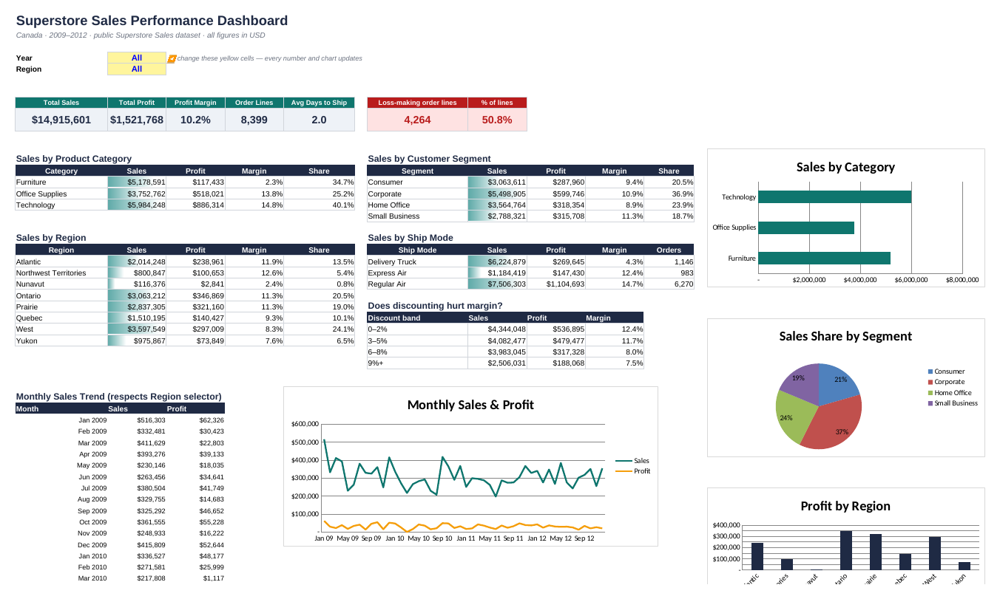

Projects · Data & Automation
Turning raw transactions into decisions
Eight analytics and automation projects built on real public datasets: about 100,000 orders from Olist, a Brazilian marketplace, and the Superstore Sales dataset. Each one connects to work I did in fintech operations: payments, reconciliation, SLAs and reporting.
How to read the status labels. These projects were built with AI assistance, and I'm reviewing and rebuilding the key steps myself. A project moves to Completed only once I can explain and reproduce every step on my own. Datasets are historical (2009–2018), not live. One file, the gateway settlement file in Project 5, is simulated because real settlement files are never published.
The eight projects
Live results
Dashboards from the analysis
Every number below was calculated from the datasets by the scripts in each project folder. Hover over a chart for exact values.
Credit card carries 78% of payment value
Share of total payment value by method
Boleto payments take ~29 hours to approve
Median hours from purchase to payment approval
Monthly payment value by method
R$, Jan 2017 – Aug 2018 · Olist
Two in three card payments use instalments
Share of credit-card transactions by number of instalments
Bigger baskets, more instalments
Average ticket (R$) by instalment band
Exceptions by type
Count of transactions, Jun–Aug 2018
Money at risk by exception type
Exposure in R$ (late settlements are timing-only, so R$0)
Exceptions per week
All exception types combined · full weeks only (4 Jun – 26 Aug 2018), by settlement date
Top exceptions to work first
Sorted by exposure. This is the analyst's worklist.
On-time delivery rate by month
Delivered on or before the promised date · note the Nov 2017 peak-season dip and the Mar 2018 carrier incident
Late deliveries destroy satisfaction
Average review score (1–5) by delivery timing
States with the lowest on-time rate
States with 300+ delivered orders, worst 8
Superstore Sales Performance Dashboard (Excel)
Year and Region dropdowns drive every KPI, table and chart through SUMIFS formulas (25,000+ formulas, 0 errors). Includes a cleaning log.
